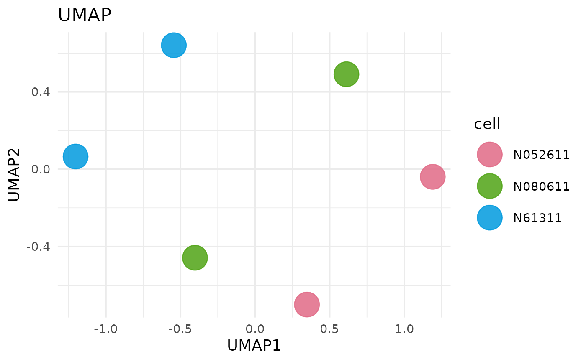

Runs UMAP on normalized counts, optionally restricting to selected groups or genes. UMAP is intended for exploratory sample-level structure.
Usage
get_umap_plot(
x,
sample_group = NULL,
group_column = NULL,
color_by = NULL,
genes = NULL,
top_n = NULL,
label = FALSE,
label_size = 3,
point_size = 10,
shape_by = NULL,
shape_values = NULL,
n_neighbors = 15,
min_dist = 0.1,
metric = "euclidean",
seed = 123,
use_vista_colors = NULL,
palette = NULL,
colors = NULL,
use_group_colors = TRUE,
top_n_genes = NULL,
max_genes = 20
)Arguments
- x
A
VISTAobject.- sample_group
Optional character vector of groups to include (based on
group_column).- group_column
Optional column name in
sample_infoused for filtering/grouping. Defaults to the stored grouping column.- color_by
Optional column name in
sample_infoused for point color. Defaults togroup_column.- genes
Optional character vector of gene identifiers to restrict the matrix.
- top_n
Optional integer selecting top variable genes to include.
- label
Logical; draw sample labels when
TRUE.- label_size
Numeric label size when
label = TRUE.- point_size
Numeric point size.
- shape_by
Optional column name in
sample_infoused to map point shape.- shape_values
Optional vector passed to
scale_shape_manual()whenshape_byis set.- n_neighbors
UMAP
n_neighborsparameter.- min_dist
UMAP
min_distparameter.- metric
UMAP distance metric.
- seed
Integer random seed passed to UMAP.
- use_vista_colors
Deprecated alias for
use_group_colors. When supplied, it overridesuse_group_colors.- palette
Optional qualitative palette name used when generating colours for non-group metadata levels.
- colors
Optional named character vector of manual colours overriding both
paletteand stored VISTA colours.- use_group_colors
Logical; when
TRUE, prefer the stored VISTA group colours when colouring by the grouping column.- top_n_genes
Deprecated; use
top_n.- max_genes
Maximum number of genes accepted in
genes(default 20).
Examples
if (requireNamespace("uwot", quietly = TRUE)) {
vista <- example_vista()
get_umap_plot(vista, top_n_genes = 50)
}
#> Warning: `top_n_genes` in `get_umap_plot()` is deprecated. Use `top_n` instead. It becomes defunct in VISTA 1.4.0.
#> This warning is displayed once every 8 hours.
#> Warning: `n_neighbors` (15) must be smaller than sample size (6); using 5.
